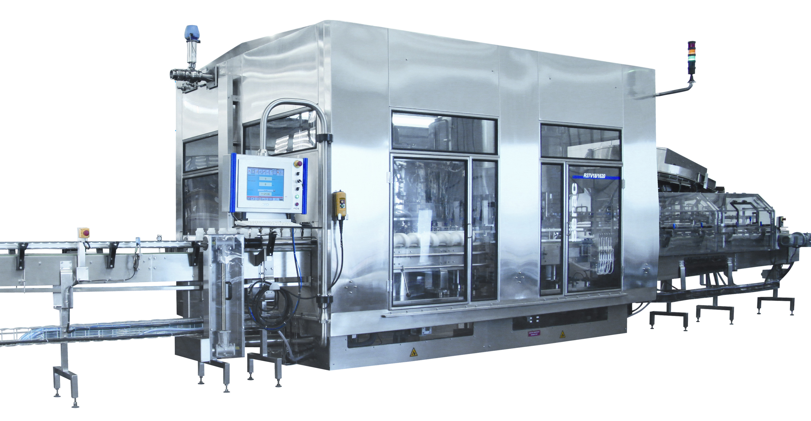

Usine KIWL Machine — Zhangjiagang, Chine
Nous fabriquons vos machines de remplissage à Zhangjiagang (Jiangsu) — essais FAT, vidéos de test produit, emballage maritime et support pour l'Afrique francophone.

Zhangjiagang est un hub reconnu de l'emballage liquide. Notre usine y concentre conception mécanique, électricité, assemblage et mise au point. Avant expédition, la machine tourne en conditions proches de votre production : formats, doses, parfois votre échantillon.
Ce que vous gagnez
- Un seul fabricant responsable du résultat
- FAT filmé / documenté pour vos équipes
- Liste de pièces d'usure et consignes d'entretien
- Formation opérateurs (sur site ou à distance)
- Réactivité WhatsApp après installation
Du devis à la mise en route
- Brief (produit, bouteille, cadence, pays)
- Offre technique et commerciale
- Fabrication et FAT
- Expédition maritime / aérienne selon urgence
- Assistance démarrage
| Localisation | Zhangjiagang, Jiangsu, Chine |
|---|---|
| Produits | Remplisseuses, boucheuses, étiqueteuses, lignes |
| Marchés | Afrique, Moyen-Orient, Asie, autres |
| Contact | +86 177 5118 9576 · cathy@kiwlmachine.com |
FAT : ce que vous voyez avant l'expédition
Le Factory Acceptance Test simule votre production : formats, doses, parfois votre produit. Vous recevez photos/vidéos et un rapport. Les écarts se corrigent en Chine, pas après 40 jours de mer.
L'emballage maritime protège châssis et armoire électrique. Nous listons les pièces jointes (outils, joints, manuels) pour que l'ouverture de caisse soit complète dès le premier jour.
Après l'arrivée au port
Déchargement, positionnement, raccordements utilités, puis montée en cadence guidée. Même à distance, une check-list étape par étape évite les erreurs classiques (sens de rotation, pression d'air, réglages couple).
Visite et audits
Les clients et partenaires peuvent planifier une visite d'usine à Zhangjiagang. Même sans voyage, les vidéos FAT et photos station par station documentent la conformité. Nous acceptons les check-lists d'audit raisonnables liées à la sécurité et à la traçabilité des composants.
Pièces et composants
Nous sélectionnons des composants industriels reconnus pour l'export. La traçabilité facilite le SAV. En cas de besoin urgent, nous identifions le joint ou la carte via le numéro de série machine.